Pictures beside a video for sounds a deaf viewer misses: heard on the soundtrack, not seen on screen. No training: detectors, a visual check and an image generator, chained.
| Stage | Chosen | Also tried (SOTA and others) | Why the chosen one |
|---|---|---|---|
| Sound detection | BEATs ∪ FlexSED 0.8 | PANNs, PretrainedSED ×5, FLAM ×2, AST, CED, SSLAM, CLAP, Qwen2-Audio | Only setup that raised recall at half the false alarms; 11 others failed their pre-set bar |
| False-alarm filter | FlexSED veto 0.3 + PANNs veto 0.05 | AST/CED ensemble, Demucs, HTDemucs, DeepFilterNet views | Gave the only significant TEST gain in precision |
| Source on screen? | Qwen3.8-27B, majority of 3 | CLIP, SigLIP, OWLv2, SAM 3, Qwen2.5-VL-7B / 32B, video input, audio-visual sync | Best on the gold ticks (0.62); object detectors are at chance (0.50) |
| What to draw | Qwen3.8 + word lists | VLM writes the whole prompt, long descriptions | Free writing invented objects (a door for a thud); lists cannot |
| Picture | Qwen-Image-2512 (Apache-2.0) | Retrieval, SDXL, SDXL-Turbo, PixArt-Σ, FLUX, Qwen-Image-2.1 | +22 points recognised, blind; 2.1 no better and research-only licence |
| Judge (2nd opinion) | Gemma-4-31B sees the panel | Mistral-7B, describe-then-judge, 6 picture checkers | Passes all three trust checks against the annotator; sees the pictures itself |
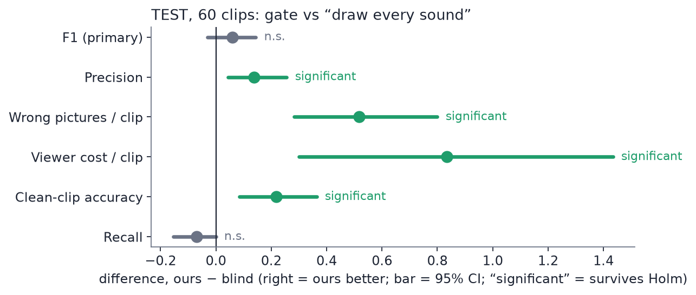
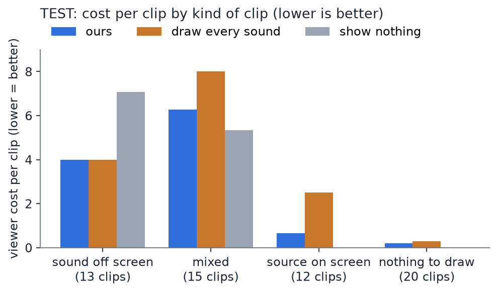
Blue = ours · orange = draw every detected sound · grey = show nothing. Cost = 4 × missed + 2 × wrong picture.
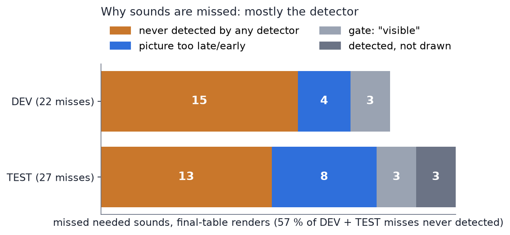
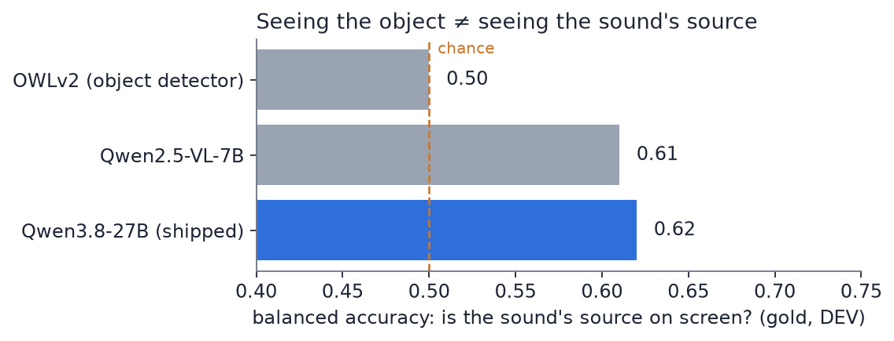
Each silenced wrong picture is worth as much as one lost right one, and the detector misses most sounds before the gate sees them. With a perfect detector the gate is significant (+0.067).
Videos show the shipped generator (FLUX). The new generator is in section 6.
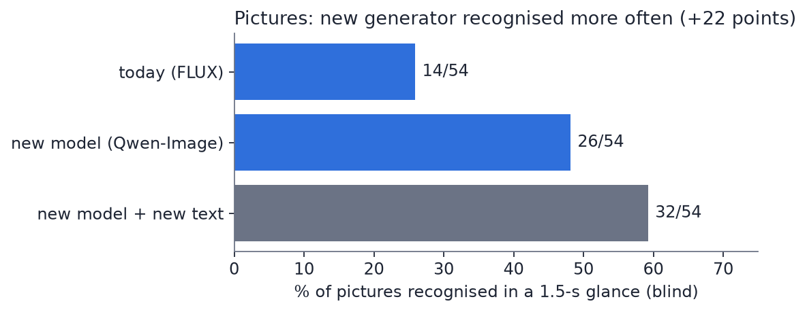
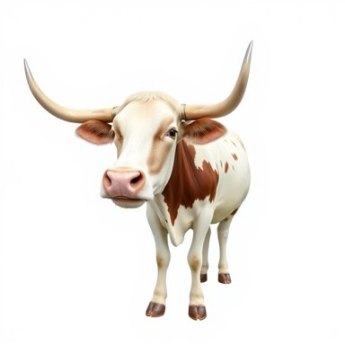
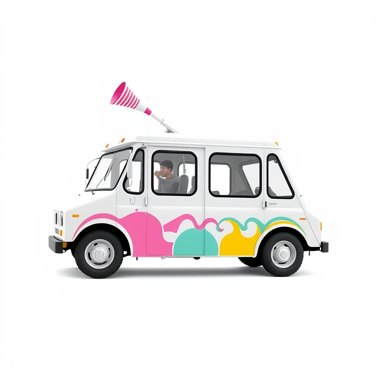
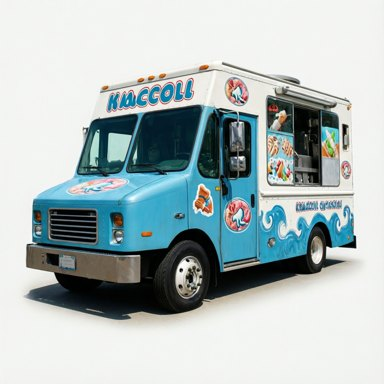
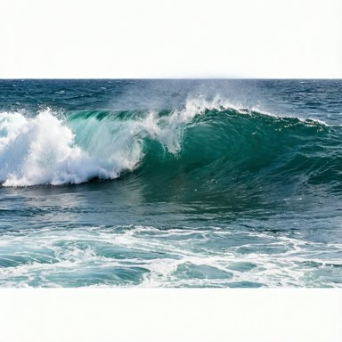
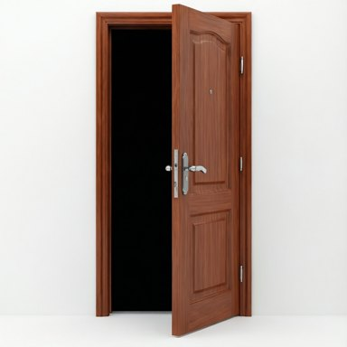
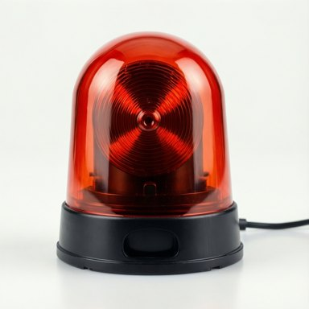
Every number here is from committed files: the final TEST table (amendment 21, prereg), the DEV table, and the blind picture round 2. Full list of what was tried and dropped: docs/LEDGER_2026-09-26.md.